自学德语这半年
For better reading experience, open this page on a PC or an iPad.
我的德语学习始于2020年7月，自学则始于2021年1月。在一年多的时间中，我只能在课业之外抽零碎的时间学习，唯独寒暑假是例外。2021年9月，我第一次参加歌德B2考试，近乎裸考，有幸高分通过。这之后，我决定不去德国读哲学，也就没有继续系统学习了。这篇文章，是对2021年1月到9月这半年语言学习经验的总结。
这半年里，我投入德语学习的时间并不算多。刚下决心自学是在去年寒假，但我探索自学方法和规划学习进度鼓捣了整整两周，只在剩下的两周假期才学了些东西。大三春季学期，我的课业依旧繁重，只能保持每天学习半小时到一小时。到了去年暑假，我报名了歌德学院的德语课程（都是为了歌德B2考位orz）。班上的同学几乎都学习了至少两年，而我的德语已经比他们所有人都好。
想标题想了半天，最后还是把豆瓣上的友邻阿卡西亚的日记标题改改用了。在我刚开始规划德语自学时，她的日记和德语学习笔记帮到我很多。
P.S. 我的自学方法不仅适用于德语，对于其他外语的学习也是通用的，已经有朋友实践到了英语学习上。
为什么要自学一门外语？我是否适合自学？
跟着班级进度学习一门外语无疑是更轻松方便的，既不需要自己设计教学方案，也不需要自己把控进度。然而，德语教学机构的教学法常常有所缺陷。机构老师当然比我们经验丰富，但在经验中对教学原理进行反思又是另一个层面的要求。
有的老师对人类学习和记忆的原理理解并不深入。哪怕是一些在德国接受了“德语教学法”科班教育的老师，仍然不乏有人倡导背诵课文这种事倍功半的方法。在我的经验里，只有歌德学院对大课教学的设计令人满意，不论是教材选择、课堂组织，还是技术设施的配合（包括zoom、从德国出版社买的电子教参、词汇卡片、单词搭配小游戏）。另一个例子是，有的老师德语优秀，但他们没有相应的的资源收集能力，很多人仍然惯于中德夹杂着进行百度搜索。英文互联网和德文互联网有非常丰富的语言学习资源，但这都被阻隔在墙外。
当然，不仅德语老师们很难满足上述要求，普通人也很难。如果决定好要自学一门语言，你需要做好心理准备：在初期，你需要花大量时间收集资源和设计教学法、学会用技术手段实现这些教学安排。我们需要使用很多小众开源项目。这些项目给自定义设计留出了很大空间，只有会写代码才能use them to the most。而且，这些项目往往很粗糙、开发者往往没有思虑周全，你就得不断地在电脑前trouble-shooting。我试图辅导不少朋友自学语言，最后真的完成了教学设计的只有一个CS科班出身的同学。不过也不需要被吓退。我刚开始自学德语的时候也不懂这些，探索时发现需要掌握一些编程语言，很快就现学现用了起来。不管怎样，你得是一个不反感折腾电脑的人。
除了自己设计教学的麻烦事儿以外，自学总还是孤独的，对自己的进度也很难心里有数。半年以来，我一直感到惶惶不安，担心我这么胡搞影响了德语学习的进度。直到在歌德学院上课，我才意识到自学如此卓有成效。我在歌德学院认识的朋友，也终于让我跳脱出之前的自闭生活。当然，这也有赖于歌德学院的分级考试机制，水平差太多的同学是不会被分进同一个班的；否则，被其他同学拖慢进度带来的焦虑，远远多于社交带来的快乐。当然，我们可以用各种方法来给自己“进度感”，比如制定计划和规定每日打卡目标。21年春季学期，多亏了我的打卡群，我才能坚持每天学习半小时到一小时。刚开始自学的时候，我更是直接给导师打了一个寒假的卡（比起给同学打卡或者金钱激励，还是导师的期望更能鞭策我orz）。
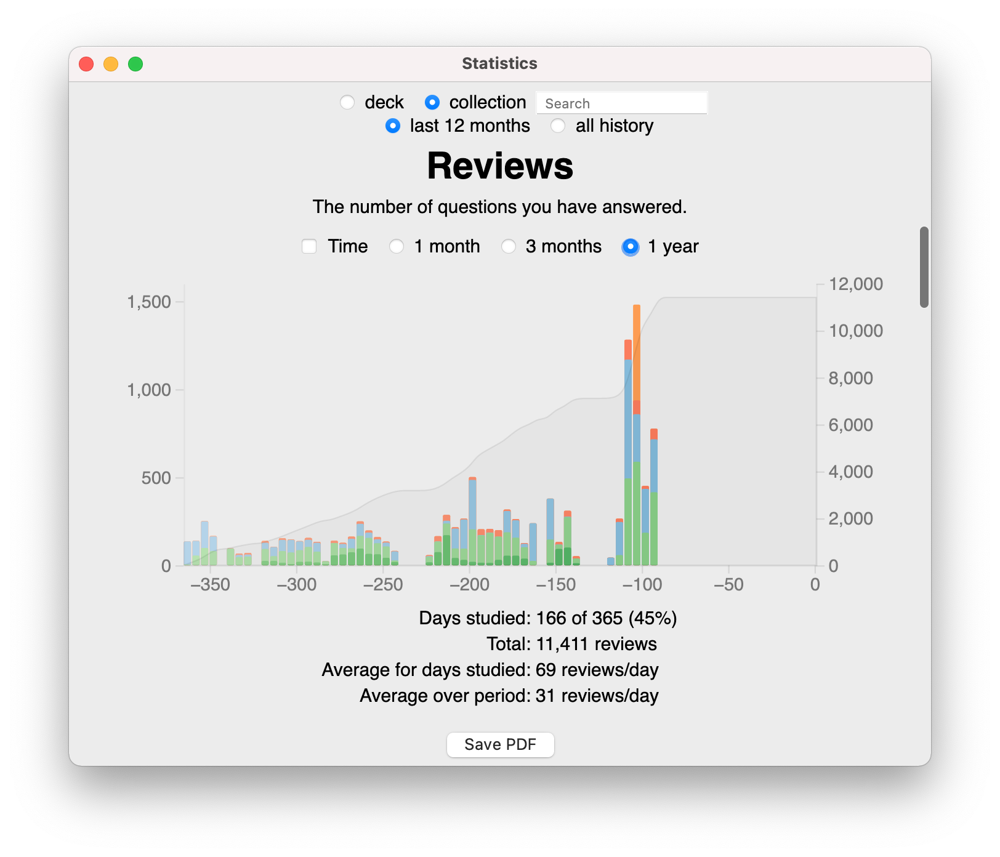
过去一年里的Anki打卡数据（除了十月在突击GRE，其他时间都在打卡德语学习）。
希望你看完这一部分的分析，能明了自己到底适合什么样的学习方式。
使用语言和间隔记忆
在我粗浅的理解中，学习一门语言，最重要的是使用它，用它去读、听、说、写。母语者怎么用，你就怎么用。在自学过程中，首要的就是每周都读了、听了、说了、写了一些东西。
背单词、背课文、记忆语法规则、学习语言学等方式，都背离了这一宗旨。背单词是把单个词汇挑出来、曲解它、把它对应上母语里的一个单词，然后简单重复两者之间的关联。背课文也是简单粗暴的记忆和发音练习，同主动口语表达完全是两回事。语法讲解则在试图把具体的句子形态归纳成普遍的结构。我们的学习当然可以借助这些方式，只是不能本末倒置。在这里贬低他们的作用，是因为我见过太多的同学把绝大部分时间花在了这些事儿上。
流水一般的外语材料输入输出已经足够把我们训练为母语者。假如我有时间在不同语境中见到同一个单词100次，我对它的理解只会比把词典释义背诵下来更好，也能更自如地在实际场景中回想起含义。只不过已经成年的我们不再有大把时间这样做，我们都是在正事儿中挤时间。另一方面，成年人比孩童更擅长抽象思维。例如，成年人可以轻松记住没有填上具体内容的句子骨架，我们也能理解语言学的研究成果、用以辅助学习记忆。总之，没有足够的时间在一种语言中游戏与生活，我们只能借助成年人的高阶能力来加快语言学习，例如背单词、记忆语法规则、学习语音学。
那么，我们应该怎么样背单词、学语法呢？我感到一个关键是间隔记忆。我精读、精听过的材料，都会把单词、表达和语法点做出Anki卡片。Anki的算法会计算好间隔，在合适的时间推给我复习。
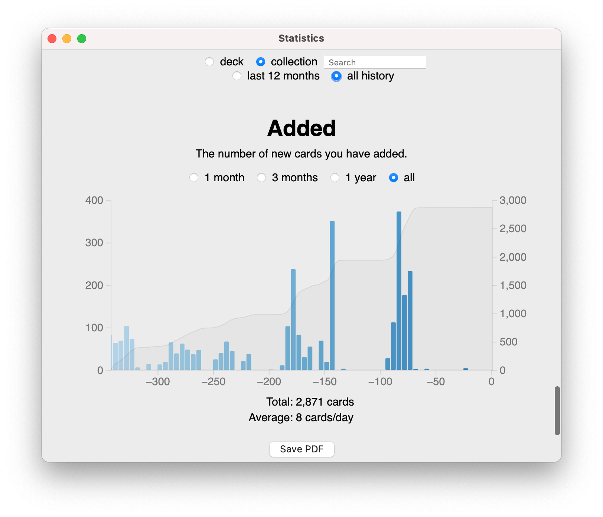
过去一年里，我已经做了2871张Anki卡片（除了十月在突击GRE，其他时间都在打卡德语学习）。
知乎上已经有很多文章科普过Anki牛逼在哪二了（传送门：Anki 怎么用？），于我而言，最大的几个好处是
- 很多背单词app喜欢吹艾宾浩斯记忆曲线，但论记忆算法还是都比不上Anki和supermemo。之所以记忆算法重要，是因为间隔时间只有恰到好处、不长不短时，记忆的效果才最好。当我们努力回想起来一个记忆模糊的知识点时（它在“记得”和“遗忘”的临界线上），对它的记忆才得到了强化。相较之下，不论是轻易唤起牢牢记住的知识点（它早已在“记得”一边），还是死活想不起来、然后翻词典和笔记看答案（它早已在“遗忘”一边），记忆其实是没有得到多大加深的。
- Anki开源社区有很多add-ons，保证我每天都可以很快做出卡片。
- Anki可以使用HTML/CSS/JS语言设计卡片布局，我会精心设计卡片、保证符合记忆习惯。比如说，一张卡片的核心并非单词，也不是释义，而是例句——背卡片的意义远远大于“在外语词汇和母语词汇之间建立记忆关联”，而是反复熟悉这一语言中的众多小语境。下图卡片的核心就是the exigencies of wartime economy，间隔记忆这张卡片时，我就是在反复熟悉这个小语境。 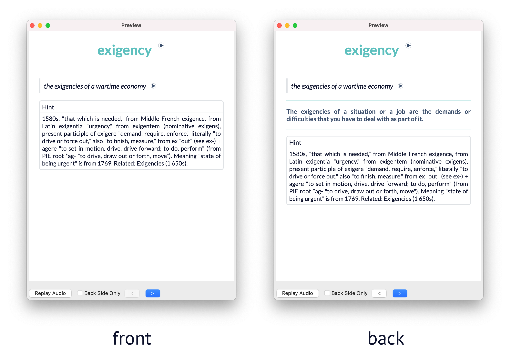
- 把学习内容转化为Anki卡片，也更容易给自己“进度感”，这对于自学是非常重要的。我规定好每天都做20张新卡片（这也意味着我需要每天都输入一些材料），并且按时完成记忆算法给我安排的复习任务。
后文涉及到具体的学习内容时，我还会展开谈Anki的用法。
发音
学习德语，首先要学的就是发音规则。尽管机构里留德回国的年轻老师发音大多都不错，但只有极少数老师懂得如何教授发音技巧。德语的发音是非常难的，
- 高密度辅音很考验口腔肌肉的灵活度，三个辅音连击的现象都不算罕见。比如，selbstverständlich这个德国人经常说的单词，就需要连发4.5个辅音lbstv（响音/l/算半个）。
- 德语的很多音素是中文和英语里都没有的，除了老生常谈的小舌音以外，还有ö, l, ch等等。
很多老师都会说，发音不重要，别人能听懂就行。但是，
- 一方面，发音会严重影响表达速度。很多同学学了两三年德语以后，这种影响还是非常严重。他们说德语时，每次都费力探索自己的口腔，然后绝望地选了个相近的发音部位，然后奋力卡口水。
- 另一方面，某些口音会严重影响可理解性。比如will这个单词。很多南欧人可能会发成wi-le，这个发音不会引起歧义，le只是把半元音l发成了辅音，发音部位都在牙后的alveolar ridge。然而，很多中国人会把will发成wir，发音部位都变了，很容易听不懂。
如何学习发音规则？德语的发音对口腔肌肉有很高要求，这自然需要你多加练习。一开始没办法顺利启动特定的肌肉很正常，重要的是不要糊弄过去。一开始可以慢一点，但每次开口都要尽力说标准，这样才能起到练习的效果。
语音学的知识也大有裨益，
- 语音学的一般知识，推荐学习A Guide to Pronuncation in Any Language by Fluent Forever和Phonetics on Wikipedia；
- 德语语音学，推荐学习German Pronuncation by Fluent Forever。
发音部位、发音方式的知识能够辅助准确发音。尤其当你要学习中文和英文里没有的音素时，例如l和ö，这些知识可以教会你应该努力调动哪块肌肉。
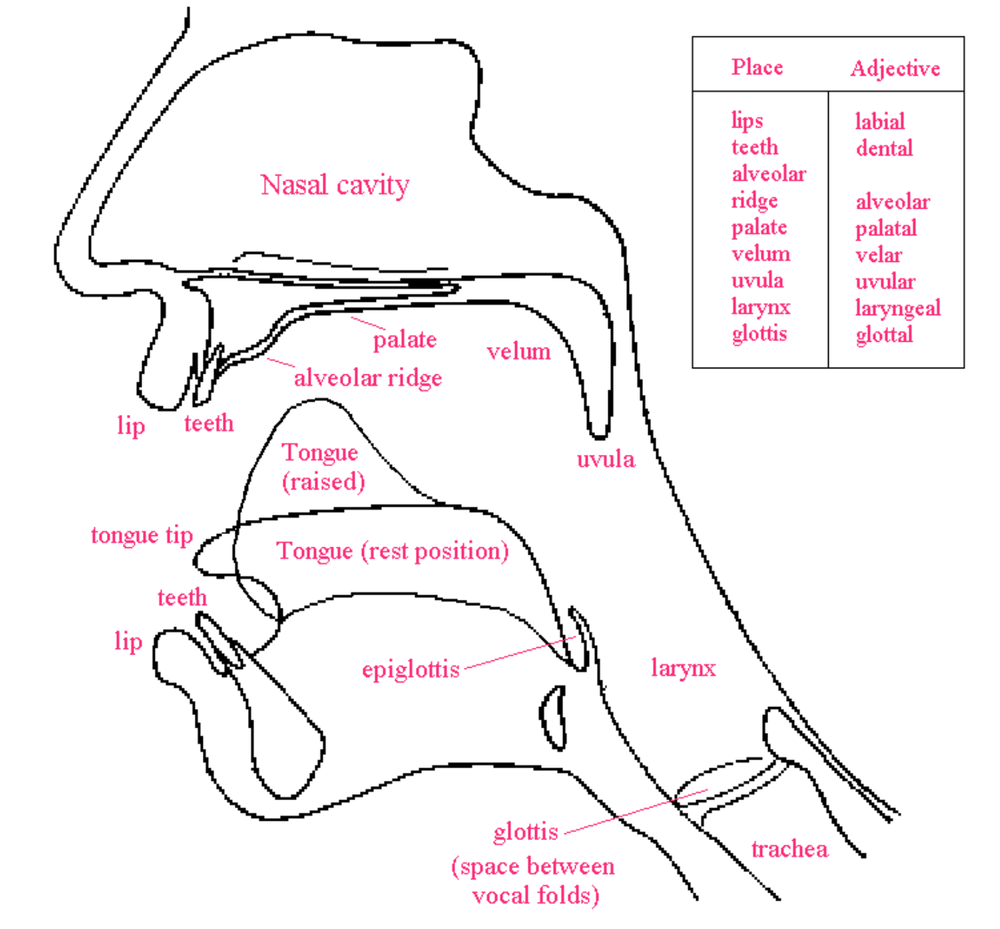
除了语音学以外，听德语歌也对发音有很大帮助。音乐的编排导致某些音节拖得很长、发得很夸张，让人清楚地听到发音过程。例如，Egal, was soll's在我看来就是最好的响音/l/教程（让你知道为啥/l/会响，虽然在一般理解里它是一个辅音）。我已经精听了25首歌，做了225张Anki卡片，
语法
自学之前的半年里，我的两位老师打好了语法基础，感谢她们。这一阶段，我的语法学习依循的是新求精的语法教材。这一系列是中国人编写的，知识点和讲解的确很全，我的基础也有赖于此。但现在看来，它们的问题也很明显。
- 基本上按照《新求精德语初级I》和《新求精德语初级II》两本书的章节结构安排，目录只写了第几章第几节，不方便查知识点，更适合配合教材学习。
- 这本教材会对语法点做很多细微的区分，现在看来并无必要。德语语言大的精神又没有把握住、需要自己去体会。 我在学习过程中完全离不开wikipedia和wiktionary，这让我可以大致体会到德语语法的精神。但很多同学并没有做到这一点，尽管他们做了很多练习。这其实是教材和教学的问题，比较可惜。
新求精中级语法教材更多是作者帮忙总结的短语和用法。但这些更适合精读精听时学习。不太能增加对语言本身的理解。
在后面的部分中，我推荐大家使用原版教材；但是原版教材的语法讲解还是不够的。这些讲解往往比较实用、不够系统。不过，追求“系统性”大概是哲学学生的职业病吧。按照原版教材的设想来、只现学现用实用语法点，说不定也挺好。能输入、能表达就是王道。不过，如果要读人文社科德语文献，系统的语法学习还是没法绕过。
对于语法学习，友邻阿卡西亚推荐了不少更好的资源，她自己还做了很多语法点的总结，强烈推荐。我自己做的语法总结里，值得分享的有两个：
- German Strong Verbs and Irregular Verbs（单击下载）：总结了变位方式特殊的动词，包括强动词和不规则动词。德语机构的老师一般把两种动词都称作不规则动词，然后要求大家死记硬背。实际上，大多数所谓的“不规则动词”的变位方式都有规律可循。 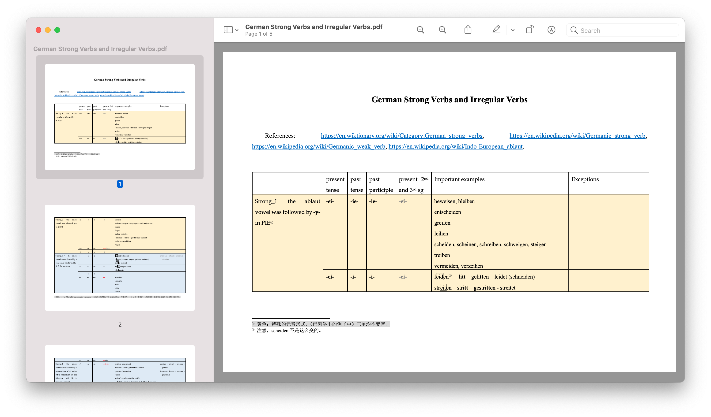
- 反身动词（单击下载）。
以上两个，我都是根据wikipedia和wiktionary整理的。大家学到什么语法点、觉得这背后很可能有些general rules时，勤用这两个关键词google。语言学习中，记忆负担重的知识点很多，我们很容易三番五次死活想不起来，总是没办法成功回想，前面提到，这种记忆是很低效的。这时候，一般性的规律可以充当“记忆的把手”，例如变位规律。借助这个把手，我们才能更容易地实现成功的回想。
词典资源分享
进入听说读写的具体训练方法之前，先分享我的词典资源，单击此处下载。这些词典是我自学德语过程中最重要的工具。对语法知识有比较全面的掌握以后，这些词典就足以解决大多数知识性的问题。
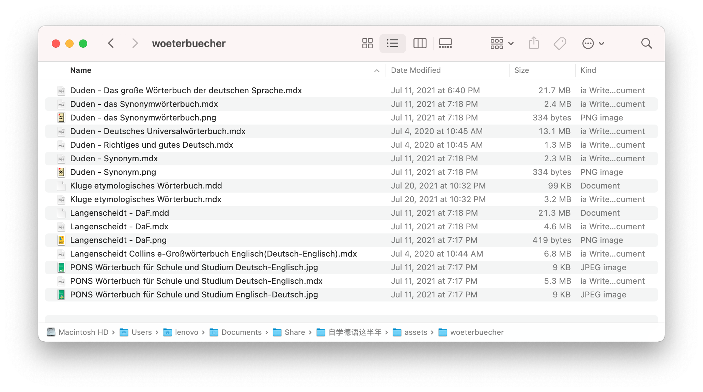
暑假在歌德学院上课时，同学们在课堂上提的绝大多数问题，都可以在这些词典里找到答案，其中一些问题，老师都不一定答得上来。除了我这里分享的词典资源以外，Freemdict论坛还有大量多语种mdx词典资源。我之前也写过文章推荐常用的英语词典，。
mdx文件在移动端和电脑端都可以使用，参见如何在欧路词典中使用mdx词典，Windows端推荐Goldendict。初次配置时有些麻烦，但千万不要半途而废。在我这篇文章的所有资源中，没有比这些mdx文件更重要的了。哪怕学不会用Anki，也必须得学会用mdx。
其中，我主要使用的是以下几个：
Langenscheidt Deutsch als Fremdsprache (DaF): 德德词典，是我B1–C1阶段主要使用的词典。
- 在德语里，一个单词的释义往往很多，有的时候几个义项的差别还很大；查词典时往往需要读好久释义，才能确认这个单词在刚刚读到的语境里是什么意思。这本词典按照用法（下图红色字体）对释义（下图蓝绿色非斜体）分门别类，把用法搭配视为构成单词释义的一部分，方便查询、也方便对不同义项进行区分。
 （忽略这个丑陋的排版。实在太好用了，所以勉强忍忍。等我有时间了重排一下。)
（忽略这个丑陋的排版。实在太好用了，所以勉强忍忍。等我有时间了重排一下。) - 专门为外语学习者设计，可读性强。不像Duden，总是用我不认识的词解释我的不认识的词。
- 在德语里，一个单词的释义往往很多，有的时候几个义项的差别还很大；查词典时往往需要读好久释义，才能确认这个单词在刚刚读到的语境里是什么意思。这本词典按照用法（下图红色字体）对释义（下图蓝绿色非斜体）分门别类，把用法搭配视为构成单词释义的一部分，方便查询、也方便对不同义项进行区分。
Duden – Das große Wörterbuch der deutschen Sprache：
- 全面权威，辅助Langenscheidt DaF使用。
- 但这本词典是给母语者使用的，总是用我不认识的词解释我的不认识的词。大大拉低学习效率，也容易让人产生挫败感。身边很多同学学到B2了还没开始用德德词典，感觉原因就是他们只知道Duden这一本德德词典的存在。
Langenscheidt Collins e-Großwörterbuch Englisch (Deutsch-Englisch)：德英词典，犯懒不想读德德词典时使用。搭配非常全。
我没有用过德汉词典，不太能做推荐；我只在初学德语、还没装好Langenscheidt Collins Deu-Eng时短暂用过德语助手——它的德汉词典实在是太糟糕了。不论是从语言相近度臆测、还是从英语学界的德语教学质量臆测，德英词典的质量都远高于德汉词典。推荐大家入门时都用德英词典，学到B1以后转到德德词典，B2及以后尽量只使用德德词典。
除了这些文件以外，我还会使用几个软件或在线数据库：
- linguee: 知道英语里某个说法的准确表达，用它查德语。（查到以后一定要再回到上面几个词典，看看这个德语单词是不是真的表达了自己的意思。）
- deepl: 知道中文里某个说法的准确表达，用它查德语。（查到以后一定要再回到上面几个词典，看看这个德语单词是不是真的表达了自己的意思。）
- DWDS语料库，可以规定时间范围、查询报刊和书籍等材料里的德语语料。写作的时候多动动手，对于某个表达或搭配，看看德国人是不是真的会这么说，还是自己杜撰出来的。
暑假在歌德学院上课时，老师说他觉得“damit, dass”比较奇怪、德国人应该不会这样说。我在DWDS查过以后发现，这个说法确实出现次数不多，尤其是1950年以后（这个意思一般用的是“dadurch, dass”），但也不能算不对。 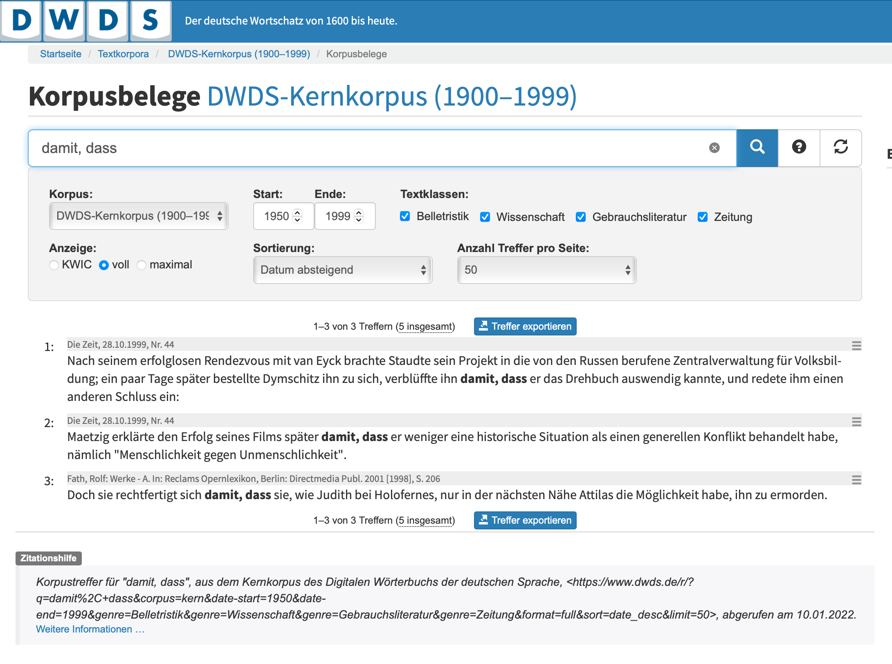 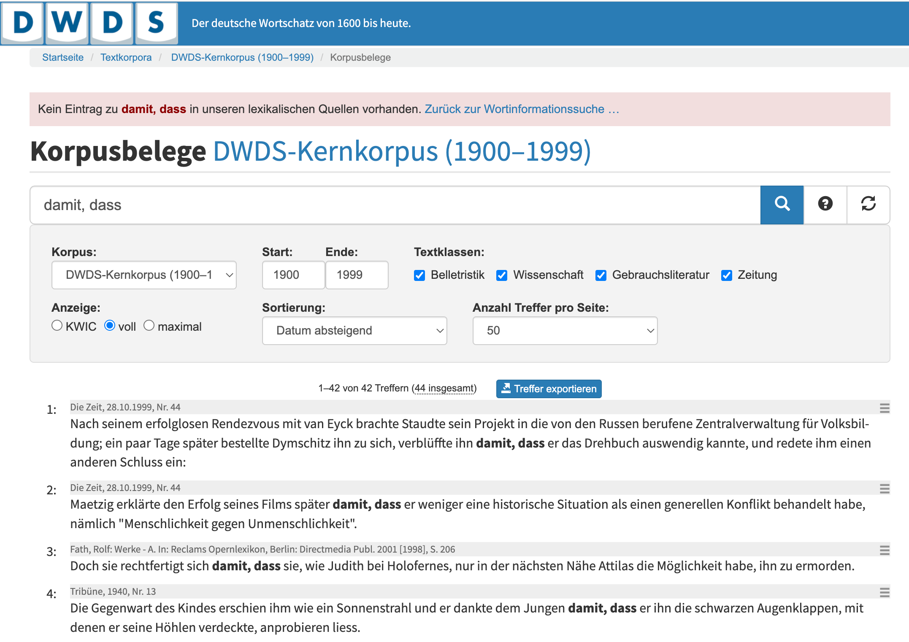
顺带分享一下我整理的“damit”的意思和用法（单击下载），我当时的全部references都包括在了这一部分分享的资源以内。暑假上课时，这个问题我们拉扯了好久，其实词典上都写得一清二楚。
怎么读和听？用什么读和听？
B2及以前的阶段，课本仍然是主要的输入材料。选教材时可以参考友邻阿卡西亚的推荐和我的德语教材豆列。
我需要结合使用教材和Anki，制作Anki卡片对电子版教材的质量要求很高。选择教材时，我的首要考虑是出版社是否提供了电子教材。所以我并没有用过太多课本。基本的感受是原版教材都还不错。
我从B2开始使用的是Aspekte系列。虽然libgen可以下载到，但还是推荐在klett-sprachen官网购买电子教材，klett-sprachen官网还可以下载到相当多的资源，如听力材料的Transcript。
读
精读：Marginnote 3 X Anki
我精读教材遵循一个固定程式：
- 首先通读全文，每句话最多读两遍，标注不明白的地方。
- 再次浏览一遍，主要关注每个段落的开头结尾，理解文章的结构和逻辑。
- 用Marginnote 3勾画不明白的句子，查询并记录生词和没有见过的表达（使用之前提到的词典资源）。效果如下（为了方便其他语种学习者阅读，下文我都使用英文材料为例） 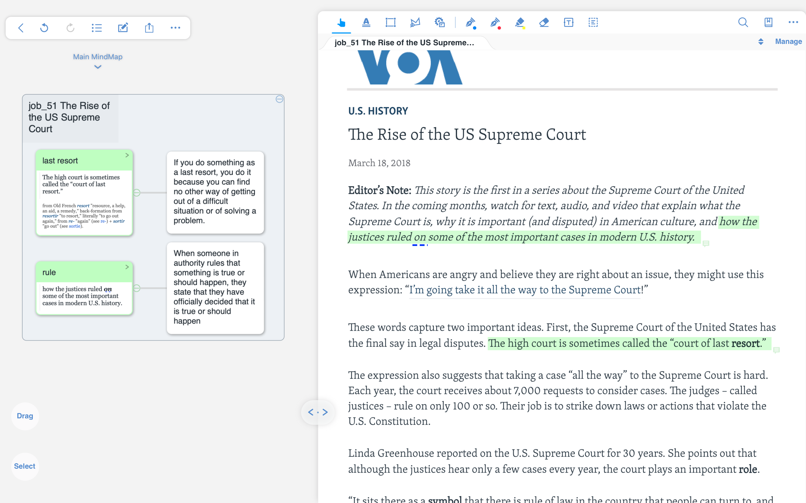
- 从Marginnote 3的笔记导出Anki卡片。导出方法见我做的教学视频。以6.1中的两个脑图节点为例，做成Anki卡片的效果如下： 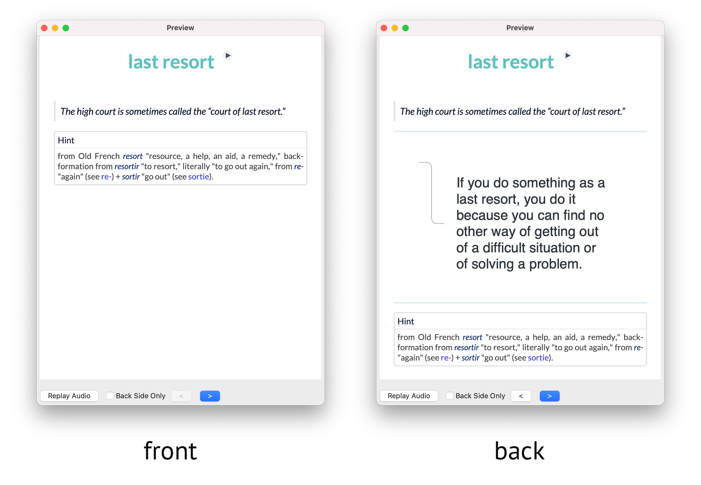 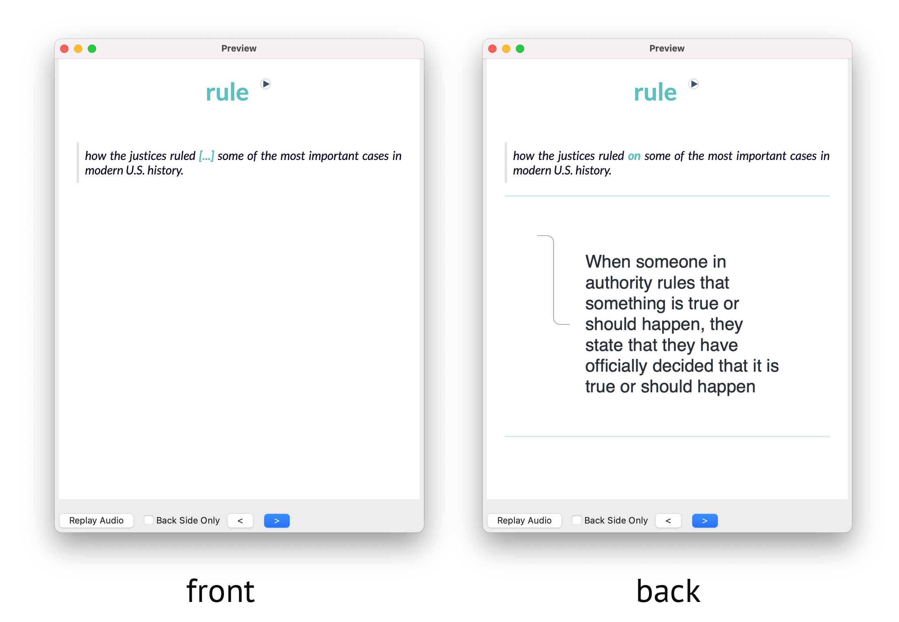
- 把卡片加入Anki，按照Anki的记忆算法进行间隔复习
to-be-added: 词源学 as comment/hint
to-be-added: marginnote2Anki教学视频（only supported on Mac / iPad）
这样精读下来，不仅能够提高理解单个句子的能力、理解篇章结构的能力，还能不断熟悉一个个小语境（做成Anki卡片的那些小语境），以上图为例，Sie fügt nachdenklich an）。
泛读：kindle X Anki
B2及以上，泛读必不可少。推荐使用kindle生词本快速制作anki卡片。泛读时积累的表达加入间隔记忆的队列中，也让自己有统一的指标来衡量自己的进度。
kindle生词本功能把【你记录的生词】【该词所在的语境】和【这是在哪本书】存储在/[Kindle Volumn]/system/vocabulary/vocab.db路径里。我写了一个Anki插件，可以把这个文件转换为Anki卡片组。不过我的插件还比较粗糙，建议使用fluentcards网站先把vocab.db导出为csv文件，再导入anki。导入的anki卡片的一个例子如下，
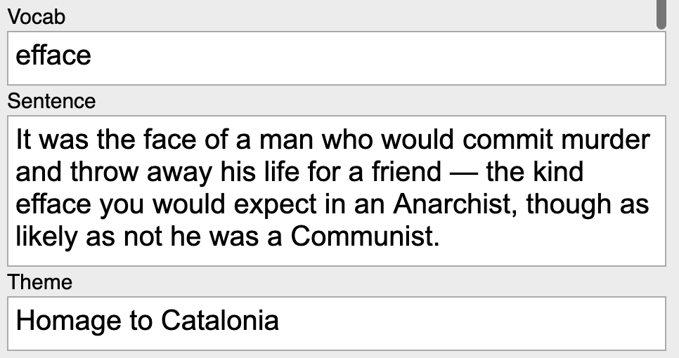
然后我们可以用插件FWQuery把mdx词典中的释义导出到卡片里，这样就不需要自己一个个查词典了（不然怎么叫泛读）。最终效果如下
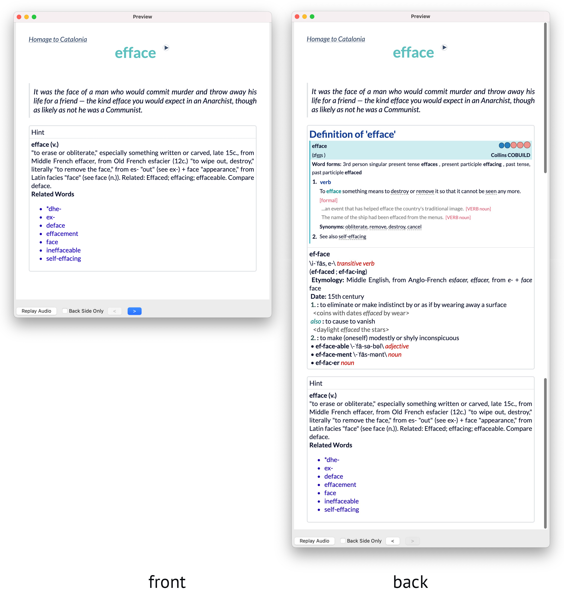
单击这里查看知乎网友写的anki & kindle & FWQuery具体教程，不过他的方法和我上面提到的不完全一样，哪个好上手就选哪个吧。
用这种方式学德语存在一个问题：kindle上的德语词典资源太少了，不方便看书时随手查看生词含义。有空的话我会把我经常用的几个mdx词典转换成kindle可以用的mobi格式（草，我给自己挖了多少坑了），有一定编程基础的朋友也可以自己试试，如果有人找到相应资源，也可以给我发邮件分享。不过，学英语是不存在kindle词典资源短缺的问题的，大家可以在这里下载英语kindle词典。
听
精听：Marginnote 3 X Anki
精听的程式大体与精读相似：
多次播放，直到听懂：
- 不间断地播放一遍听力材料，没听懂的先不管，尽量跟上大致的意思。听完一遍后，回想一下这篇材料的结构。
- 播放第二次，跟不上时可以暂停、回想一下。
- 播放第三次，如果还有听不懂的句子，可以倒带回放。听完三遍后，再次回想这篇材料的结构。
精读听力原文，表达导入Anki：
- 在Marginnote 3中打开Transcript，查询并记录生词和没有见过的表达（使用之前提到的词典资源）。（同精读第3步）
- 从Marginnote 3的笔记导出Anki卡片。导出方法见我做的教学视频。（同精读第4步）
- 把卡片加入Anki，按照Anki的记忆算法进行间隔复习。（同精读第5步）
回顾熟悉听力材料：不间断地播放一遍听力材料。如果还有听不懂的地方，可以回顾一下Transcript，并重新播放一次。如此循环，直到完全听懂。
复述训练口语：再次播放听力材料，每播放两三句暂停下来，用自己的话或者听力原句复述这两三句话的大概意思，如果感觉有困难，倒带回放这两三句话，重新尝试复述，直到成功复述。
与精读类似，这样精听可以提高理解单个句子和篇章结构的能力。与此同时，刚刚听到的东西，在复述时转化成了主动表达库，是对口语的训练。自学期间，我很少有人和我对话，我的口语训练主要靠的是复述。我们不需要复述阅读材料，就“主动表达”而言，听力材料里的语料更为紧要。
泛听：Anki X subs2srs X FWQuery
搭配Anki、截取视频信息的插件subs2srs、提取mdx词典释义的插件FWQuery做卡片，可以很方便地截取字幕、视频截图和音频。这种方法尤其适合泛听，看视频时顺手就把卡片做出来了。
推荐把Youtube视频作为学习资源，5–15分钟小视频适合作为daily routine，而且视频文件和字幕文件都很容易下载下来（推荐使用youtube-dl）。
不过，为了配合以上学习工具，要注意选有高质量字幕的视频：字幕始末要精准，一行字幕是一个完整的分句，最好有标点符号。
德语学习可以用德国之声DW德语学习系列视频，如Das Video-Thema。英语学习推荐TED和National Geographic 101。
subs2srs的设置如左，从视频中导出到卡片的效果如右。
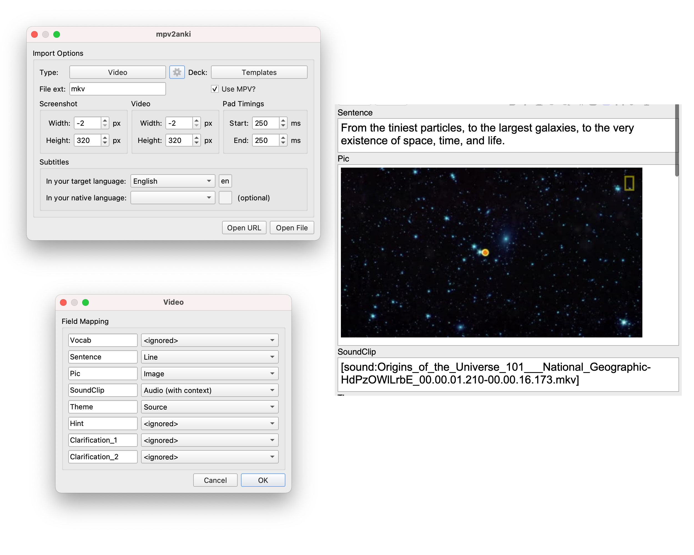
再用上FWQuery，最终效果如下。
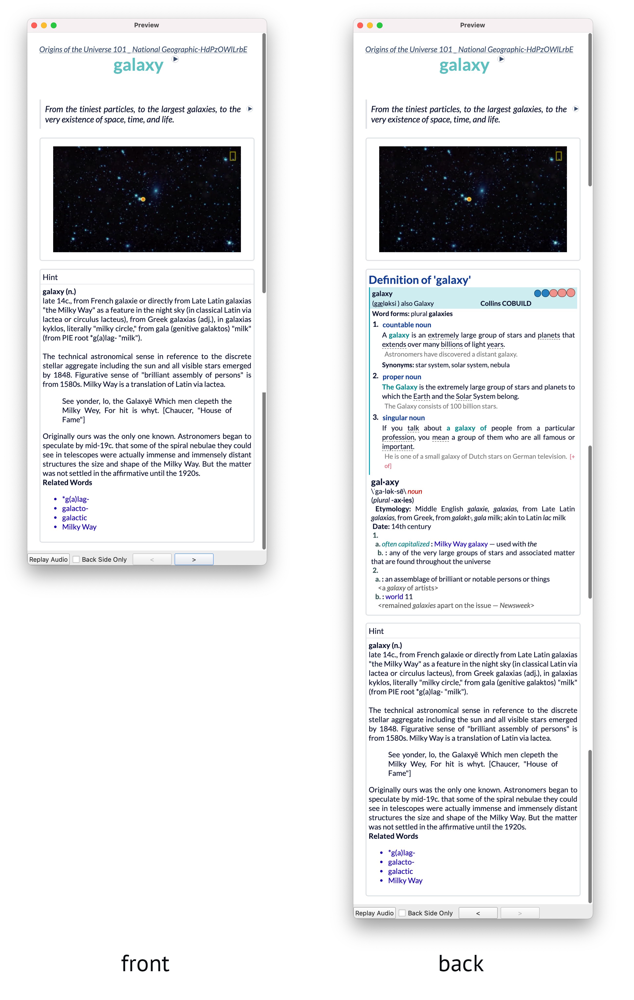
to-be-added: 上图中的卡片制作视频。
怎么说和写？用什么说和写？
口语一向是中国学生的老大难，网上一直流传各种提高英语口语的“秘笈”，比如背课文、复读听力材料。在我眼中这些方法都吃力不讨好。背诵和复读，与其说是表达训练，不如说是发音训练。在这一过程中，我们并未尝试主动说出自己想表达的东西。
口语训练的关键，是足够量的主动表达，尤其是“自由表达”Freisprechen。
- 上一部分提到了复述听力材料，在这一过程中，我们用上自己的话或听力材料里已有的表达，还原听力材料的意思，不要求、甚至应该避免背诵原句。
- 另外，我每周还会在italki上找德国姐姐闲侃45分钟。德国姐姐并未提供系统的教学。与其说她是老师，不如说是语伴。
除了自由表达以外，我唯一的刻意训练就是口语课后复盘。在我表达的过程中，德国姐姐会及时纠正我的错误表达和奇怪说法，发在skype聊天框里。课后，我就把这些内容整理成挖空卡片或翻译卡片。
复习挖空卡片时，我需要根据语境回想出挖空处的单词——这种过程与主动表达接近。如果做成普通卡片，下图所示的卡片例句里conjugation的意思我是可以想起来的，但当我自己需要使用被挖掉的单词时、需要用英语表达“变位”这个意思时，我很可能无法顺利想到它。
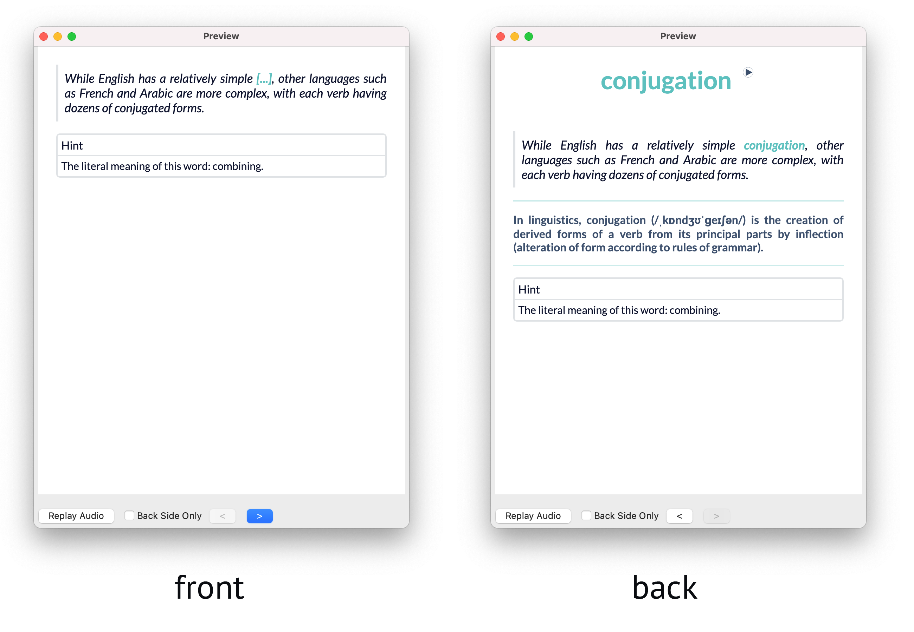
翻译句子时，我也需要回想应该用什么表达，这也是在排演主动表达。
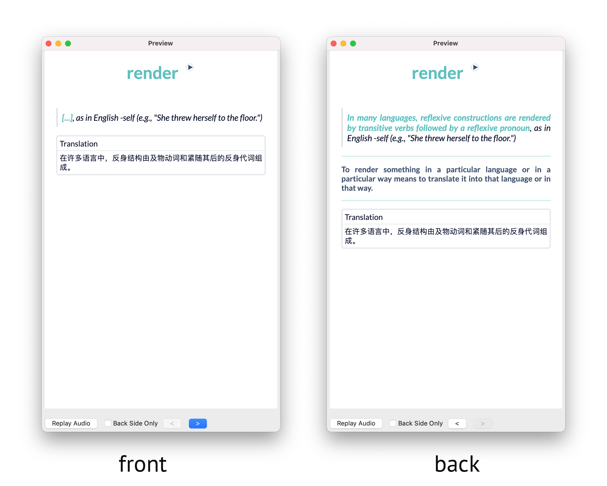
训练写作时，我会花很多时间查词典和语料库，确保德语里确实有自己用的这些表达。写完后，我会把作文发给德语老师或者italki上的德国人修改。最后，我会复盘自己查到的新表达和他们的修改意见，做成挖空卡片和翻译卡片，与口语卡片类似。
结语
本文里提到的所有类型的Anki卡片可以在这里打包下载。把这个apkg文件导入anki以后，你们可以直接在我的模版里填充自己的内容。在每个field里填充内容时，尽量和我对这个field的安排保持一致，否则排版可能会乱。如果想重新排版，需要有HTML/CSS的基础知识。
去年一月探索生产力方法两周以后，我才找到了自学的节奏。在日复一日的稳定学习中，我逐渐获得了对语言学习的掌控感，开始能从中获得乐趣。学会一门新的语言，就像打开一个新的世界。从前不可言说的东西，在一种新的言谈方式中获得了生命。我已经不再打算去德国留学，本科毕业后大概也没有机会继续做德国哲学了，但我仍然在继续学德语，并且会一直坚持下去。尽管我一开始为德语学习掉了不少头发，但是现在想来，过去一年中带给我最大快乐和成就感的东西，德语学习绝对有一席之地。希望这篇文章也能帮你体会到这种快乐和成就感。